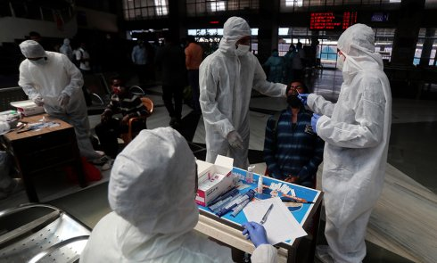

Откуда взялся коронавирус: Китай указывает на Индию, а ВОЗ ищет истину

24 ноября «Женьминь Жибао» опубликовала пост в фейсбуке.В нем газета привела слова бывшего главного эпидемиолога Центра по контролю и профилактике заболеваний Китая (CCDC) Цзэнь Гуана.В частности, он сказал, что вирус впервые обнаружили в Ухане, но зародился он в другом месте.
В посте также были слова другого эпидемиолога CCDC У Цзунью — он заявил, что в Китай инфекция могла попасть через импортированные замороженные продукты.В подтверждение теории газета написала, что в Италии антитела к коронавирусу нашли в образцах крови, которые брали еще в сентябре 2019 года.
Более развернуто на тему возникновения коронавируса высказались китайские ученые.Они отправили в старейший медицинский журнал Lancet статью (ее препринт выложили 17 ноября, но пока сам материал не рецензировали и не публиковали в издании).В ней указано, что перед тем, как инфекция попала в Ухань, она пережила эволюцию.Китайские ученые также выдвинули теорию о том, что впервые коронавирус мог передаться от человека к человеку в июле или августе 2019 года.
Продолжил информационную кампанию Китая и официальный представитель министерства иностранных дел страны Чжао Лицзянь.«Китай был первой страной, сообщившей о случаях COVID-19, но это не значит, что вирус возник в Китае», — говорил он.
Но, как отмечает Guardian, западные ученые сомневаются, что вирус мог зародиться за пределами Китая.
Ученые также поставили под сомнение и теории о передаче вируса через замороженные продукты.По словам специалистов, вероятность заразиться коронавирусом таким способом небольшая.Guardian отмечает, что по мере ухудшения ситуации с инфекцией в мире власти Китая пытаются защитить свою репутацию.Отчасти поэтому Пекин оказывает медицинскую помощь другим странам, а также предлагает финансово поддержать программы иммунизации населения.
Достоверно историю происхождения вируса до сих пор никто не знает.Одна из самых вероятных версий сегодня — что коронавирус появился на рынке морепродуктов в Ухане.Первым его носителем в нынешнем виде могли стать летучие мыши.
Есть и другие версии происхождениям коронавируса, но у них меньше доказательств.Например, еще весной госсекретарь США Майк Помпео заявлял, что патоген могли разработать в китайской лаборатории Уханя.Он также ссылался на мнение экспертов, которые говорили об искусственном происхождении вируса.Подтверждения эта теория в дальнейшем не получила.
Отследить происхождение инфекции планирует Всемирная организация здравоохранения, собрав международную группу ученых.В нее вошли 10 человек, которые работают в области общественного здравоохранения, в сфере охране здоровья животных и вирусологии.Ученые представляют 10 стран, среди которых, Россия, Япония, Дания, Австралия, Великобритания и США.
Они будут работать вместе с китайскими коллегами.30 октября у них уже прошла виртуальная конференция.При этом пока неясно, когда они поедут в Китай для проведения исследований.Китайские власти обещают, что примут исследователей в ближайшее время.
Этот материал опубликован более суток назад.Поэтому данные, приведенные в нем, могут устареть и не совпадать с текущими.
Posted On: 2020-11-30T21:00:00
Posted By: RTVi
Content Date: 2020-11-30
Download Date: 2021-03-17
Document ID: L0C0497OC